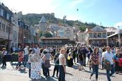

Tbilisi is the capital and largest city of Georgia, located at the crossroads of Europe and Asia.
Founded: Tbilisi was founded in the 5th century. Cultural Melting Pot: The city has a rich history influenced by various cultures, including Persian, Ottoman, and Russian.
Location: Nestled in a valley on the banks of the Kura River, surrounded by hills and mountains. Climate: Tbilisi has a humid subtropical climate, with hot summers and mild winters

Architecture: A mix of ancient churches, Soviet-era buildings, and modern architecture. Notable sites include the Narikala Fortress and the Peace Bridge. Arts: Home to numerous theaters, museums, and galleries, reflecting its vibrant arts scene.
Tbilisi Jazz Festival: An annual event celebrating jazz music. Tbilisi Open Air: A popular music festival featuring local and international artists.
